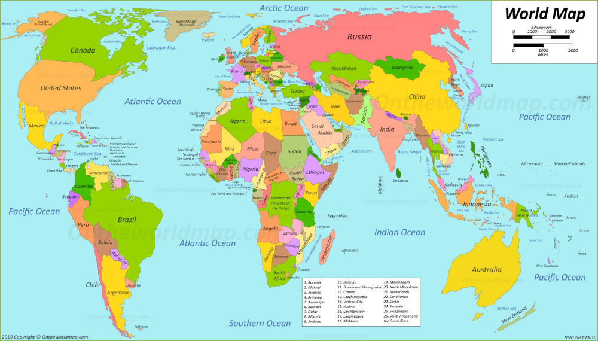
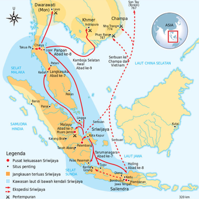
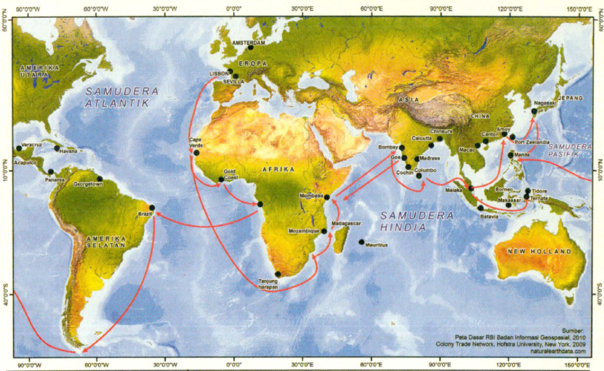

Guru membuka pelajaran dengan salam dan doa bersama.
Simak gambar berikut, menurutmu rute-rute mana saja yang pernah dilalui oleh bangsa eropa untuk mencari asal mula rempah-rempah berada ?.

Simak video beriku : "perlombaan rempah-rempah" dan pelayaran awal bangsa Eropa ke Nusantara.
Setelah menyaksikan video tersebut mari telaah bersama "Mengapa rempah-rempah begitu berharga sehingga bangsa-bangsa Eropa rela menyeberangi lautan untuk mendapatkannya ?" dan "Wilayah geografis mana di Indonesia yang pertama kali menjadi sasaran bangsa Eropa ?".
Pentingnya geografi dalam sejarah kolonialisme.
Penjelasan: Geografi adalah faktor penentu dalam sejarah kolonialisme. Kepulauan Indonesia yang kaya rempah-rempah adalah target utama karena komoditas tersebut sangat bernilai di Eropa. Selain itu, kondisi geografis seperti angin muson, selat, dan pelabuhan alami menentukan jalur pelayaran dan lokasi strategis yang menjadi pusat kekuasaan kolonial. Integrasi geografi dalam pembelajaran sejarah juga bisa melihat perbedaan perubahan kondisi pada zaman tertentu jika dilihat dari sudut pandang sejarah.
Apa tujuan kita mempelajari sejarah dan apa hubungan nya dengan kehidupan sehari-hari.
Penjelasan: Tujuan pembelajaran ini adalah agar kita memahami bahwa peristiwa sejarah bukan sekadar masa lalu, tetapi membentuk realitas kita saat ini. Kita bisa mengaitkannya dengan:
Tata Kota dan Infrastruktur: Jalan, rel kereta api, dan gedung-gedung tua yang ada di kota-kota besar sering kali merupakan peninggalan masa kolonial.
Keragaman Budaya dan Bahasa: Interaksi dengan bangsa asing selama masa kolonial memengaruhi bahasa, arsitektur, dan kuliner kita.
Sistem Ekonomi: Industri perkebunan atau pola perdagangan yang berpusat pada ekspor komoditas adalah warisan yang masih terasa.
Inti
Memahami (bermakna, menggembirakan)
Diskusi dan Eksplorasi Informasi: Carilah sebuah artikel dan mengeksplorasi sumber tentang kolonialisme dan imperialisme Eropa.
Pertanyaan Pemantik: Diskusi pertanyaan-pertanyaan utama tentang motif, fitur geografis (misalnya pelabuhan, daerah penghasil rempah-rempah), dan perubahan peta perdagangan.
Membuat Peta Konsep: Buatlah sebuah peta konsep tentang motif pelayaran bangsa eropa, dan analisa perbedaan batas-batas dan kota-kota penting sebelum dan sesudah masa kolonial(perbedaan jalur perdagangan dan pusat pertumbuhan kota sebelum dan sesudah kedatangan bangsa eropa ke Nusantara).
Mengaplikasi (bermakna, menggembirakan)
Analisis Peta: Siswa menganalisis peta historis dan kontemporer untuk membandingkan batas dan kota penting sebelum dan sesudah masa kolonial.


Analisis Dokumen: Siswa menganalisis dokumen sumber primer pendek.
Proyek Kolaboratif: Siswa membuat proyek "Perjalanan Historis" dalam bentuk infografis, story map, atau video.
Diskusi dan Refleksi Kelompok: Siswa berdiskusi dan menyampaikan pendapat tentang dampak kolonialisme.
Merefleksi (berkesadaran, bermakna)
Siswa mempresentasikan hasil proyek "Perjalanan Historis" kepada kelas.
Siswa menerima umpan balik dari teman dan guru.
Siswa menulis jurnal refleksi pribadi.
Siswa melakukan evaluasi diri terhadap pencapaian tujuan pembelajaran.